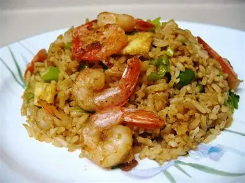
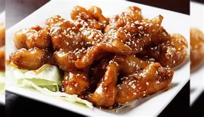
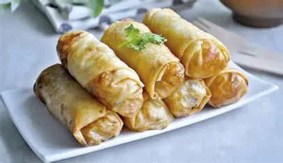

Galería




Ver toda la galería
Tradición, calidad y pasión por la gastronomía china.
Descubre la fusión de recetas ancestrales y creatividad moderna.
Déjate sorprender por cada plato y vive una experiencia única en cada visita.
Fundado en 1985 por la familia Lung, El Puño de Dragón nació del sueño de compartir la auténtica cocina china con la comunidad local. A lo largo de los años, hemos mantenido vivas las recetas tradicionales, transmitidas de generación en generación, y las hemos combinado con un servicio cálido y familiar. Cada plato cuenta una historia de dedicación, respeto y amor por la cultura gastronómica china.
“El Puño de Dragón honra la memoria de Pin-Chun-Ling, una cocinera visionaria que llegó al Perú en los años 60 con recetas ancestrales y un espíritu de hospitalidad. Su legado vive en cada plato, donde la primavera de sabores se encuentra con la calidez familiar.”
Ofrecer experiencias culinarias auténticas y memorables, combinando ingredientes frescos y recetas tradicionales chinas en un ambiente acogedor y familiar.
Ser el referente de la gastronomía china en la ciudad, transmitiendo valores de tradición, calidad y hospitalidad a cada generación de clientes.
| Día | Horario |
|---|---|
| Lunes a Viernes | 12:00 - 22:00 |
| Sábado | 12:00 - 23:00 |
| Domingo | 12:00 - 21:00 |
“El mejor chifa de la ciudad. La atención es excelente y los sabores son auténticos.”
- María G.“Ambiente familiar y platos deliciosos. Recomiendo el arroz chaufa especial.”
- Luis P.“La comida siempre llega caliente y fresca. ¡Volveré pronto!”
- Andrea T.“Platos abundantes y precios justos. El tipakay es mi favorito.”
- Jorge R.